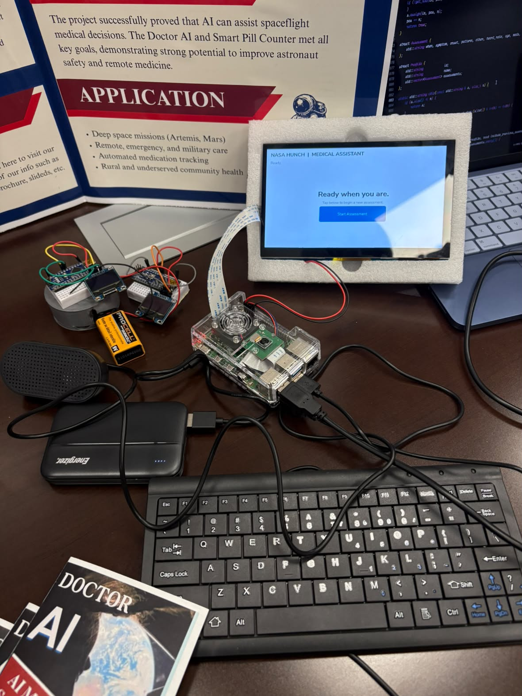
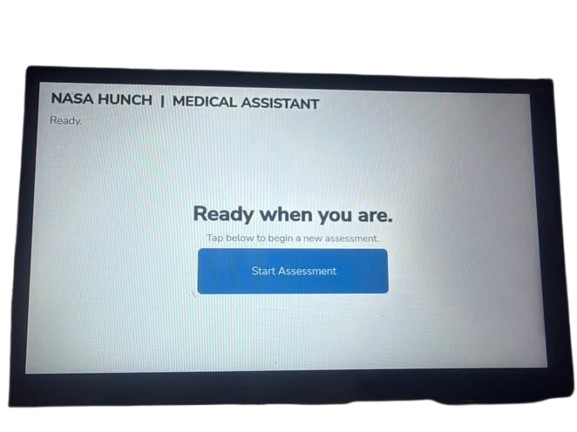
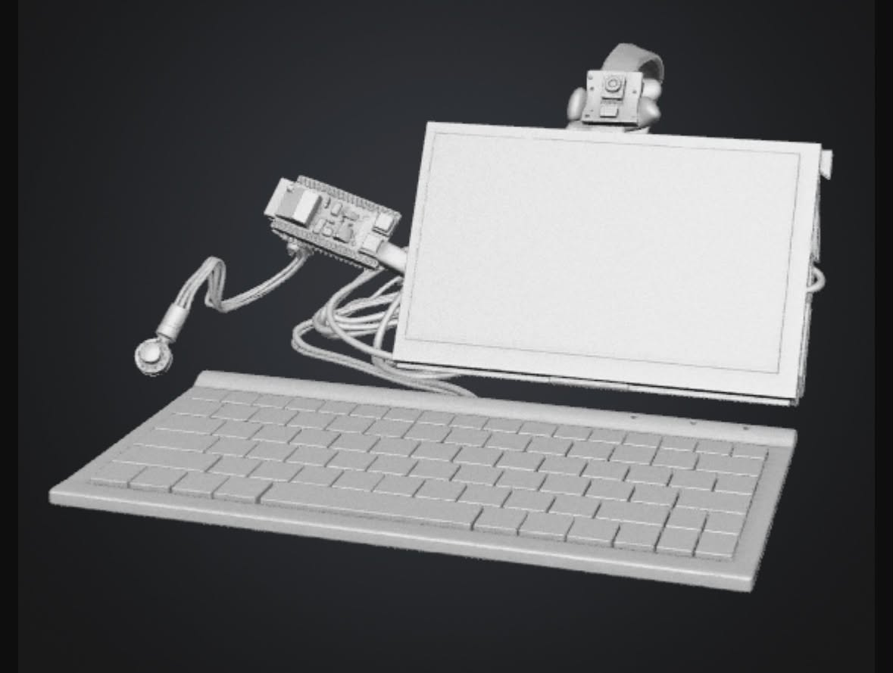
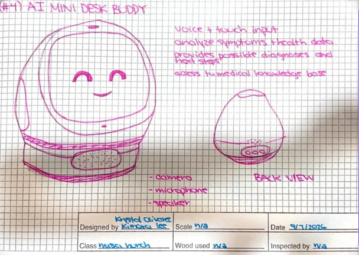
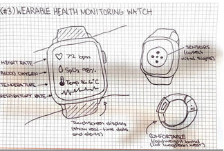
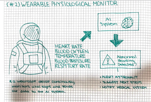
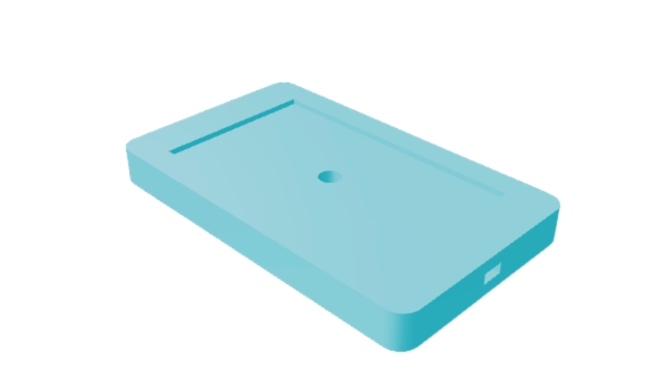

Sketches, builds
and next steps.
These are real project artifacts—from the first interface sketches to hardware on the bench. Concepts show directions explored, not features that are already built.
The form followed
the job it had to do.
Early brainstorming explored wearable monitoring and compact companion devices alongside an AI medical assistant. The team chose to build around a guided, screen-based assessment that could bring questions, answers, and model output together.
Criteria that shaped the interface
- Make the sequence understandable for a user without medical training.
- Support touch and keyboard entry in the current flow; keep speech input as a possible future improvement.
- Keep the assessment flow and reference context available locally.
- Be clear about what is built, what is experimental, and what remains future work.
Ideas became
something to test.
Sketches, enclosure studies, the interface preview, and hardware photos document different stages of the work. The video shows a terminal walkthrough of the local assessment flow. Some images show proposed designs; they are not all parts of the assembled device.
 BUILT HARDWARE
BUILT HARDWARE
PDR HARDWARE
INTERFACE PREVIEW
3D CONCEPT
INTERFACE SKETCH
WEARABLE CONCEPT
WATCH STUDY
ENCLOSURE CAD RELATED PROTOTYPE
RELATED PROTOTYPE